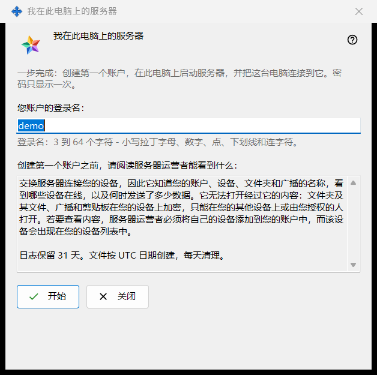
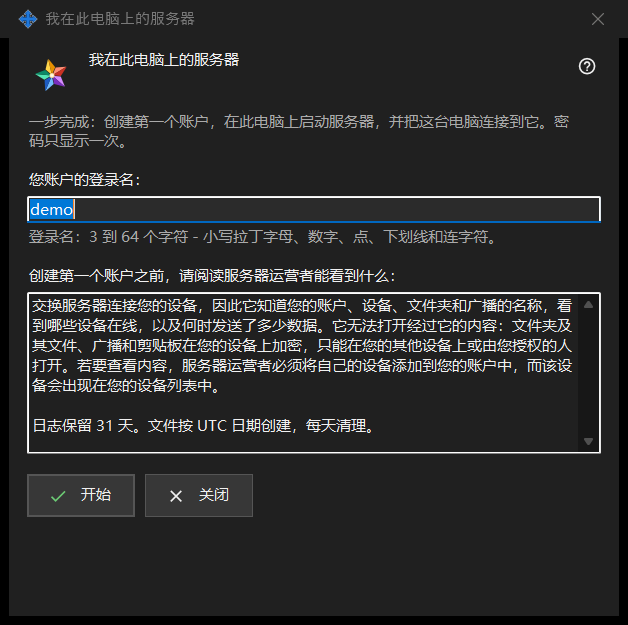

我在此电脑上的服务器
用途说明
一次完成在此电脑上设置个人 Media Exchange Server：创建第一个账户、启动服务器，并把这台电脑连接到它。从 Share Manager 设置中 Media Exchange Server 页面的「将此电脑用作我的服务器..」按钮打开；只有此电脑上尚未设置服务器时才会显示该按钮。


操作顺序
- 检查根据您的 Windows 用户名给出的建议登录名，或输入自己的登录名。
- 阅读关于运营者能看到什么的声明。
- 点击「开始」，等待四个步骤完成。
- 立即复制密码，然后复制指纹或连接字符串，供其他设备使用。
- 点击「关闭」。
界面元素
登录名
「您账户的登录名：」要求 3 到 64 个字符：小写拉丁字母、数字、点、下划线和连字符；大写字母会自动转为小写。在文本还不能作为登录名时，输入框下方的提示显示为警告色，「开始」在此之前不会执行任何操作。
运营者能看到什么
「创建第一个账户之前，请阅读服务器运营者能看到什么：」下方的只读框列出服务器运营者能看到的账户、设备、文件夹、广播和剪贴板信息，服务器无法读取的内容，以及日志保留的天数。在您自己的服务器上，您就是运营者。
步骤与失败
「开始」依次执行四个步骤并显示当前步骤：「正在创建账户..」、「正在启动服务器..」、「正在检查证书..」和「正在连接此电脑..」。在此期间登录名被锁定，窗口无法关闭。如果没有创建账户，会有一句话说明原因，例如「该账户已存在 - 请选择另一个登录名。」；修改登录名后再次点击「开始」。
结果与地址
成功后窗口显示「完成：服务器正在运行，账户已创建，这台电脑已连接到它。」，并列出「此电脑使用的地址：」、「其他设备使用的地址：」（在该地址设置之前显示为「未设置 - 请在交换服务器的设置中填写」）、「用户名：」、「密码（只显示一次）：」和「证书指纹：」。设置好其他设备使用的地址后，会再增加「连接字符串：」。如果服务器没有启动，账户仍然存在，其密码会在下方显示一次。
密码与复制
密码以掩码显示。「显示密码」会将其显示出来；「复制密码」通过受保护的途径把它放入剪贴板，使其不进入 Windows 剪贴板历史记录和云剪贴板。除非开启了「在此电脑上保存账户密码」，窗口只显示这一次。「复制指纹」和「复制字符串」是普通复制：两者都不含密码。其他设备需要地址、用户名、密码和指纹，首次连接时它们会比对指纹。
关闭
如果密码既没有被复制，也没有被显示，也没有保存在此电脑上，「关闭」会询问「不复制密码就关闭吗？」，默认答案是「否」，因为密码无法再次显示，只能重置。